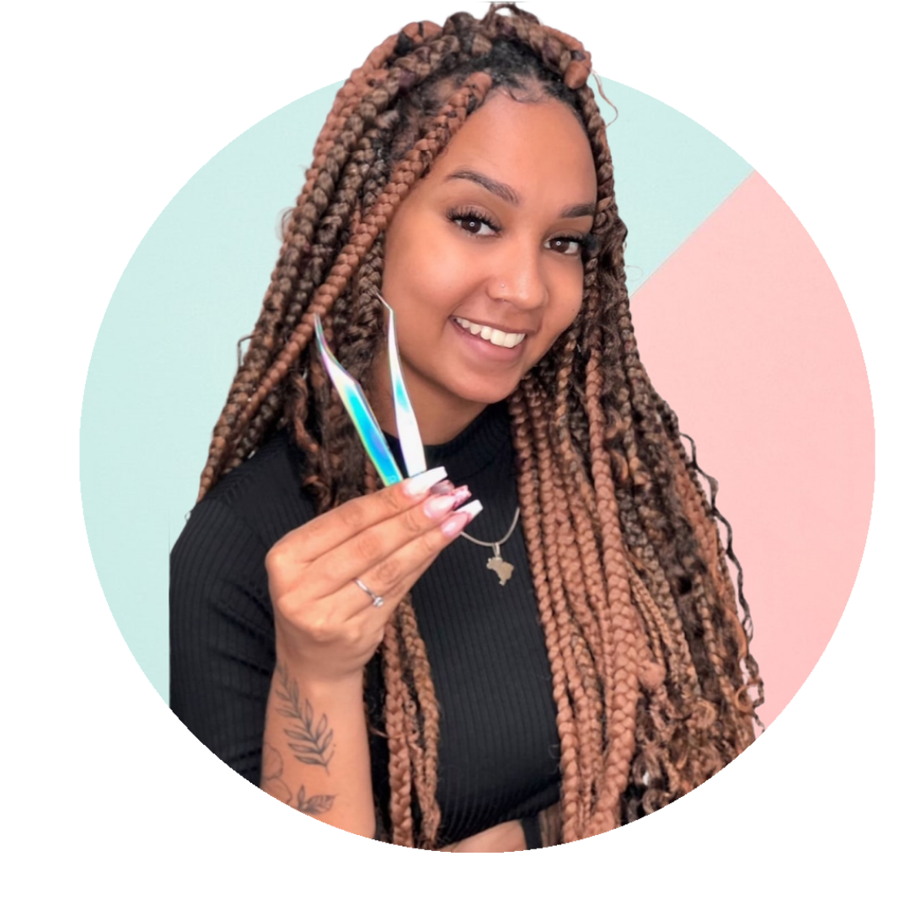

Sobre Sheila

Me chamo Sheila Rosas sou de Pernambuco e moro no Rio de Janeiro desde os 6 anos, tenho 23 anos, sou mãe solteira de um menino chamado Lorenzo de 3 aninhos e é o melhor presente da minha vida! Costumo dizer que meu filho me deu a vida, ele foi a minha segunda chance, dele eu renasci. Moramos no complexo da maré – Vila Do Pinheiro - RJ.
Sou Designer de Sobrancelhas e Lash Designer, antes tinha vergonha em falar da minha profissão como um trabalho, mas hoje falo com orgulho por ser de onde tiro meu pão de cada dia e consigo dar uma vida melhor para o meu filho. Trabalho na área da beleza à 3 anos e hoje sou especialista em extensão de cílios e professora também, atualmente formei 5 meninas na área de cílios em 2 meses. Meu começo na área foi mais pela necessidade, tive que pedir demissão do meu emprego porque meu filho estava com apenas 4 meses e não tinha com quem deixar, então decidir fazer doces pra vender, vendia na rua, BRT, no centro da taquara e para os comerciantes locais, e com esse dinheiro dos doces consegui pagar meu curso de sobrancelhas e assim tudo começou.
Hoje em dia trabalho em um Studio de Beleza aqui na comunidade onde moro e sou conhecida e referência como profissional para várias meninas que tem o sonho de seguir na área. Hoje vejo tudo que passei na minha profissão e tudo que superei e onde cheguei, meu sonho sempre foi ter a agenda lotada! e hoje trabalho de 9hrs às 22hrs sem parar! é gratificante porque vejo quanto meu trabalho é importante para várias meninas, a sensação de poder ajudar elas de alguma forma e melhorar a sua autoestima é algo muito gratificante. Hoje sou muito grata e feliz!
Desejo que no futuro eu seja uma profissional reconhecida tanto na minha comunidade como no mundo inteiro e poder retribuir pro meu filho por toda essa minha ausência por conta de tanto trabalho, pois tudo que faço é por ele.